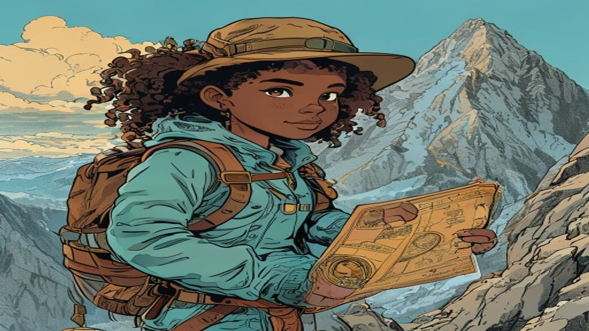

Treasure Map Navigator
A storm-worn chart names a lost cache somewhere across the archipelago. As the navigator Maya, you must chart ordered pairs across all four quadrants, reflect points across the axes, and reason with integers and absolute value — reading elevation above the waves and depth below them — to triangulate the treasure before the tide turns.
Charting the Grid

Elevations & Depths

The Cache


Cache Recovered — Expedition Complete!
The treasure is unearthed, Navigator. You charted ordered pairs across every quadrant, reflected points across the axes, ordered integers from the deepest wreck to the highest gull rock, and used absolute value to measure true distances from the surface. A flawless fix. The map — and the gold — are yours.
Prove your rank to certify your Master Certificate!
Coordinate Reflection: Reflect the beacon plotted at coordinates (−3, −4) across the x-axis. What are the coordinates of the reflected point?